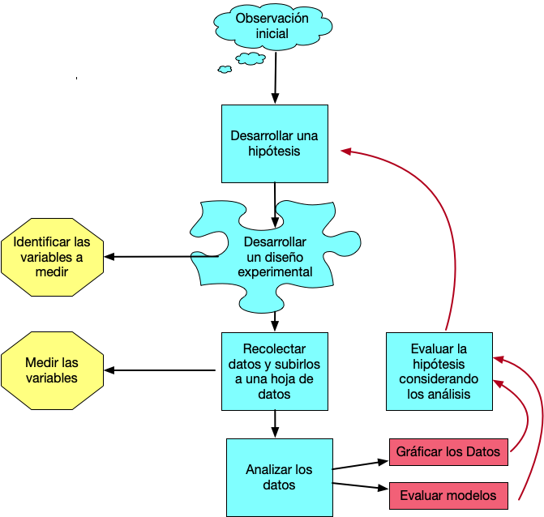
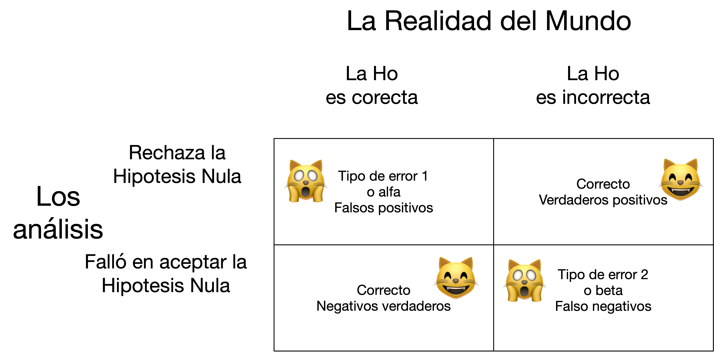

2 Introducción a la BioEstadística


2.1 El libro de la clase
Ningún libro es obligatorio
Libros sugeridos:
Discovering Statistics Using R, Andy Field, Jeremy Miles, Zoë Field. 2012. Sage Publications. ISBN: 978-1-4462-0462-1
Fecha de la ultima revisión
## [1] "2025-09-17"2.2 El proceso de investigación:
En este curso se estará enfatizando los análisis cuantitativo, esto es simplemente que analizamos los datos para llegar a una conclusión o interpretación sobre un tema. Naturalmente el proceso de seleccionar los datos puede ser un reto grande. Como uno selecciona los datos y el desarrollo de la investigación depende del diseño experimental. El diseño es el procedimiento de como uno recolecta los datos y como los vamos a analizar. En este curso no estaremos evaluando métodos cualitativos de análisis. Este método cuanlitativo se refiere a evaluar principalmente opiniones, motivaciones o razones que influencia o impacta una situación. En los métodos cuantitativos es necesario que los resultados sean de una forma o otra numéricos o categóricos.
El proceso de investigación cuantitativo tiene múltiples pasos y podemos visualizar los pasos con un diagrama de flujo.

(#fig:intro 2)El proceso de Investigación
2.3 El primer paso:
Todo comienza con una pregunta que te llama la intención. Esta pregunta proviene de haber observado tu ambiente. Puede que sea algo muy sencillo (por ejemplo: si la cantidad de estudiantes registrado en una sección impacta su rendimiento), o puede ser una pregunta más complicada (por ejemplo cual es el impacto de la lactancia sobre el desarrollo de las células, organos, la bioquímica y inteligencia de los niños).
2.4 El segundo paso
El próximo paso es desarrollar una hipótesis. Hay dos tipos de hipótesis, la hipótesis nula y la hipótesis alterna. SIEMPRE uno comprueba la hipótesis NULA. La nula en la forma más sencilla, es que los grupos son iguales. En otra palabra, si regresamos a la pregunta del primer paso, el rendimiento de los estudiantes es irrelevante de la cantidad de estudiantes en el salón en otra palabra es igual si hay pocos o muchos estudiantes. La hipótesis alterna es que “que la cantidad de estudiante en un salón impacta el rendimiento de los estudiantes”. Hay otros tipos de hipótesis nula que veremos más tarde.
- Si se acepta la hipótesis nula esto quiere decir que NO hay evidencia que los grupos sean diferentes.
- Si se rechaza la hipótesis nula es que hay evidencia que los dos grupos sean diferentes.
2.5 El tercer paso:
Ahora hay que definir cual son las variables (datos) que se van a recolectar para evaluar la hipótesis. Por ejemplo, cuantos grupos de estudiantes se seleccionará (2, 3, 10 salones?), La información se recolectará de cuantos estudiantes por salones (todos, la mitad, los que se aparece, o se seleccionará los estudiantes al azar, y si selecciona al azar cual es el mecanismo para seleccionarlos de esta forma). Cual sera el indice de “rendimiento” (el entusiasmo de cada estudiante, la nota de un examen, de un trabajo, la nota final). Si se selecciona la nota final la información sera la nota numérica o alfabética (A, B, C, D, o F).
Tomando la información anterior en consideración esto determinará el diseño experimental y las pruebas estadísticas que se deberá utiliza en el quinto paso.
2.6 El cuarto paso:
Recolectar los datos. Este se debe hacer de una forma sistemática, con la información bien apuntado y subir la información en una hoja de calculo (spreadsheet), como MS Excel, Google Sheet y Numbers. Es mi sugerencia de NUNCA utilizar un programa como SPSS o JMP para poner los datos, ya que con estos programas si en el futuro se quiere tener acceso a los datos, y no tiene el programado o el programado ha cambiado de versión muchas veces los datos no se pueden leer (experiencia personal).
2.7 El quinto paso:
En este paso se hará los gráficos y los análisis estadísticos para evaluar la hipótesis.
2.9 Tipo de error de interpretación en estadística
El concepto básico en estadística, y probablemente el más difícil a captar es que en el mundo existe la verdad, pero cuando uno recolecta datos, no necesariamente los datos de la muestra representa la verdad o se acerca a la realidad. Por consecuencia siempre hay una posibilidad de que los datos nos engaña, y si nos engaña estamos haciendo un error en rechazar o aceptar la hipótesis nula. Por consecuencia aun que uno tome todas las precauciones para tener un diseño experimental adecuado es posible que los datos no representan el universo de los datos (la verdad).
Típicamente se rechaza la hipótesis nula si el valor de p es menor de 0.05 (p < 0.05). No es necesario que el valor sea menor de 0.05 para rechazar la hipótesis, en cierta condiciones el valor crítico pudiese ser mayor o menor de 0.05. El valor de p represente la probabilidad de rechazar la hipótesis nula cuando se debería aceptar. Por consecuencia un valor de p = 0.05, significa que hay 5% de probabilidad de cometer un error en que rechazamos la hipótesis cuando se debería aceptar si repetimos la investigación 100 veces (una razón de 1:20). Entonces este representa un tipo de error posible, frecuentemente nominado tipo de error 1 o alfa. En otra palabras significa la probabilidad de rechazar la hipótesis cuando uno debería aceptar la hipótesis. El otro tipo de error 2 o beta representa el error de aceptar la hipótesis nula cuando se debería haber rechazado.
Los tres términos usado en estadística para de los dos tipos de errores
- Tipo de error I, alfa, falso positivos
- Tipo de error II, beta, falso negativos
Aquí un gráfico de los tipos de errores. El gráfico representa los dos tipos de error y las dos condiciones en que no se hace un error.

(#fig:intro 3)El proceso de Investigación
Ahora vamos a considerar un ejemplo básico de preguntas que se podría evaluar. En este tiempo moderno un tipo de programas a la televisión bien común son los “Reality Shows”. Donde típicamente participa individuos supuestamente “normal” que no sean actores profesionales. Aquí una lista de algunos de los “Reality Shows”.
2.9.1 Consideramos los Reality Shows:
- Kardashians
- The Bachelorette
- Survivors
- Big Brother
- Shark Tank
- Skin Wars
- Hell’s Kitchen
2.9.2 Personalidad de las personas
Uno se podría preguntar que tipo de persona son seleccionado para participar en estos tipos de programas. Una hipótesis que son gente con tipo de personalidad bien específica o que sean personas “normales”. Una hipótesis es que son gente que cumple con unas características tal como Trastorno de personalidad narcisista (TPN): estas personas de vez en cuando caracterizado como megalomanía, demuestran un patrón a largo plazo de comportamiento anormal caracterizado por sentimientos exagerados de importancia personal, necesidad excesiva de admiración y falta de empatía.
En un ejemplo de Field et al. 2014 se demuestra la siguiente información sobre personas que solicitaron ser parte de uno de estos Reality Show que se llama Big Brother.
Una hipótesis es que los productores de estos Reality Shows seleccionan gente con características de TPN más a menudo que las gente que no tienen esta condición. Podemos comprobar esto recolectando datos de los que solicitan y los que fueron aceptado o no a participar en Big Brother (United Kingdom). Se entrevistaron 7662 personas para seleccionar 12, a cada uno se le hizo una prueba si tenia síntomas de TPN.
***
| No TNP | TPN | Total | |
|---|---|---|---|
| Seleccionado | 3 | 9 | 12 |
| Rechazado | 6805 | 845 | 7650 |
| Total | 6808 | 854 | 7662 |
Lo que uno observa es que la gente que son identificado que tiene características que cumple con TPN son más propenso a ser seleccionado para participar en el programa. Si fuese que la selección hubiese sido al azar, uno esperaría solamente 1 o 2 personas al máximo con la condición de TPN, no 9 personas. Más tarde aprenderemos como calcular el valor esperado exacto.
2.10 Cuando que una hipótesis no es una hipótesis?
2.10.1 Una hipótesis tiene que ser falsificable
Esto quiere decir hay que tener un mecanismo para determinar la veracidad de una expresión. Por ejemplo en las 4 expresiones siguiente hay 2 que no pueden ser falsificable. El concepto de hipótesis falsificable proviene del filósofo Karl Popper en su libro Logik der Forschung (1934), traducido al español La lógica de la investigación científica. Ahora toma el tiempo de evaluar las siguientes expresiones y trate de determinar si son hipótesis falsificable. Desafortunademente, en el vocabulario popular el términos hipótesis y teoría se usan para describir cualquier pensamiento que la gente QUISIERA que se verídico. También se hace hipótesis o mejor dicho expresiones que no son falsificable. En nuestra sociedad donde cualquier persona se puede llamar un especialista en un tema los comentarios no falsificable dominan y resulta en confusión para la gente. Es importante en ciencia que los temas, las áreas de investigación sean falsificable.
2.10.2 Ejercicio 1
- Lin Manuel es el mejor actor del mundo
- Todos la cisnes son blancos
- El aumento en producción de semillas en una planta X aumenta con el tamaño poblacional de esta especie.
- Los Beatles vendieron más discos que cualquier otro grupo artístico.
2.10.3 Evaluación de las expresiones falsificables
-
Lin Manuel es el mejor actor del mundo.
Esta expresión no es una hipótesis falsificable porque el concepto de mejor es uno que es basado en un juicio individual. En otra palabra como se mide “mejor, y quien toma la decisión sobre este medida cualitativa. Si Ud. proviene de una cultura diferente la apreciación a la música cambia dramáticamente.
-
Todos los cisnes son blancos
El problema con esta expresión es la palabra “Todos”. En ningún momento aun que uno trate nunca se podría encontrar “Todos” los cisnes para evaluar sin son blancos o no. Por consecuencia no es falsificable. El concepto de “Todos” aquí asume que ni uno no sera evaluado, que es imposible.
-
El aumento en producción de semillas en una planta X aumenta el tamaño poblacional de esta especie.
Este es una hipótesis falsificable por que uno puede hacer un experimento para evaluar la relación que hay entre la producción de semillas y el tamaño poblacional de una especie de plantas.
-
Los Beatles vendieron más discos que cualquier otro grupo artístico.
Este es una hipótesis falsificable porque se puede contabilizar la cantidad de discos vendidos por los Beatles y otros grupos y determinar si es cierto o no.
2.11 Variables Independientes y Dependientes
-La variable Independiente: es la variable que impacta (teóricamente) la variable dependiente (puede ser que no impacta el resultado). Típicamente la x en un modelo es la variable independiente.
-La variable Dependiente: es la variable que recibe el efecto (teóricamente) de la variable independiente. La variable dependiente depende de la variable independiente. Las y’s en un modelo son las variables dependientes.
2.12 Niveles de mediciones
2.12.1 Variables continuas
-
Las variables con datos continuos:
Son valores que son contiguos o por lo menos existe o pudiese existir los valores intermedios.
Ejemplo 1
la distancia entre el valor 13 y 15 es igual que 101 y 103, hay dos unidades que los separa.
Aunque no se haya observado el 14 ni el 102 en un recogido de datos estos valores tienen potencialmente existir, en otra palabra estos valores son posibles en el universo de los datos.
-
Ejemplo 2
- Si se mide el tamaño de una célula biológicas en micrómetros (µm, \(10^{-6}\)). Los valores intermedios y contiguos existen. Por ejemplo, el largo de las células de Escherichia coli (E. coli) adulta son de 5.27µm en promedio con una desviación estándar de 0.87µm. Esto significa que hay células de diferentes tamaños que van de menos de 2µm a más de 10µm de largo, y todos los valores pueden existir en este rango (ref: https://doi.org/10.1098/rsos.160417). Más tarde veremos como se puede llegar a la conclusión que las células varían entre 2µm a más de 10µm de largo, cuando uno tiene solamente el promedio y la desviación estándar.
Ejemplo 3
- El número de hermanos, si por ejemplo yo pregunto a seis estudiantes cuantos hermanos tiene. Yo podría tener la siguiente lista. Aunque que no hubo ningún estudiante que tenga 1 hermano o 6 hermanos, es posible esta alternativas. Note algo especial aquí es que nadie puede tener 2.4 hermanos, los valores tienen que ser números enteros. Cuando son conteos así, la distribución de los datos provienen de una distribución Poisson (veremos más tarde).
- Números de hermanos (0, 2, 5, 3, 8, 4)
2.12.2 Variables Discretas
- Categórica o Discreta
- Variables Nominales
- Hombres y Mujeres
- Omnívoro, vegetariano, vegano, carnívoro
- Variables Nominales
- Variable Ordinal
- Datos donde hay un orden en los valores
- primero, segundo, tercero, etc.
- A, B, C, D, F (nota de estudiantes)
- pequeño, mediano, grande
- Datos donde hay un orden en los valores
- Variable Binomial
- Tiene solamente dos alternativas
- Vivo o muerto
- Vive en PR o No vive en PR
- Esta embrazada o No esta embarazada
- Tiene flores o no tiene flores
- Tiene solamente dos alternativas